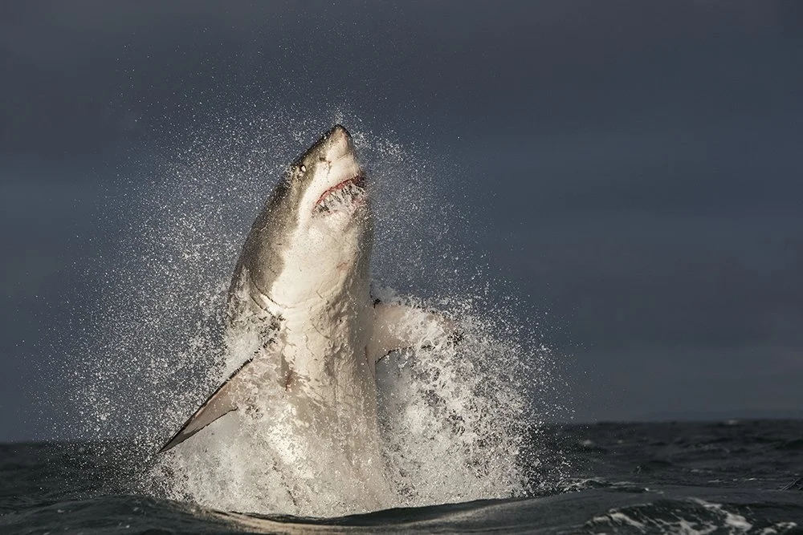

No tengo animales favoritos, pero de los que más me pueden gustar son los Tiburones Blancos. ¿Por qué? Pues no lo sé pero me parecen brutales.
La primera imágen se puede ver como es de grande el Gran Tiburón Blanco. Puede llegar a medir hasta 5 metros.

La segunda imágen podemos ver el salto que hace el Gran Tiburón alto. Puede saltar 3 metros de la superficie del agua.